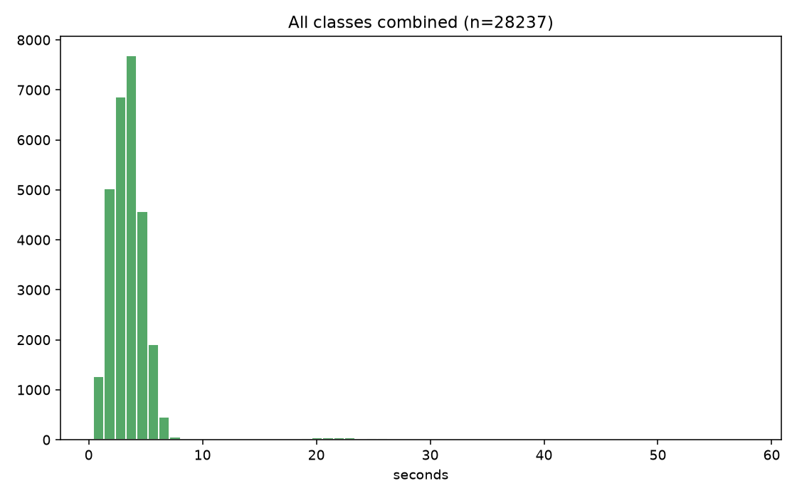
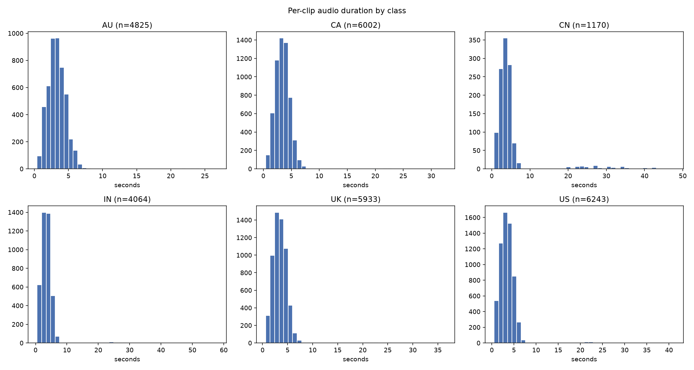

| count | mean | std | min | 50% | 90% | 95% | max | |
|---|---|---|---|---|---|---|---|---|
| class | ||||||||
| AU | 4825.0 | 3.423594 | 1.990508 | 0.4 | 3.300000 | 5.0 | 5.599992 | 26.827755 |
| CA | 6002.0 | 3.631891 | 2.180362 | 0.4 | 3.400000 | 5.1 | 5.600000 | 32.600816 |
| CN | 1170.0 | 5.211907 | 6.659660 | 0.6 | 3.700000 | 5.9 | 23.106612 | 47.777959 |
| IN | 4064.0 | 3.823055 | 3.602598 | 0.5 | 3.399958 | 5.3 | 6.000000 | 57.965714 |
| UK | 5933.0 | 3.610754 | 2.430900 | 0.6 | 3.388000 | 5.1 | 5.700000 | 36.597551 |
| US | 6243.0 | 3.619218 | 2.667778 | 0.5 | 3.376000 | 5.2 | 5.700000 | 41.195102 |

